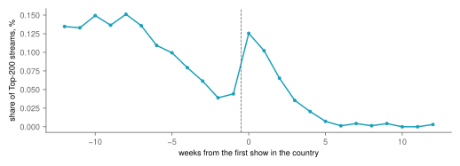
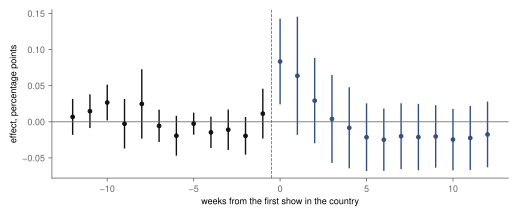
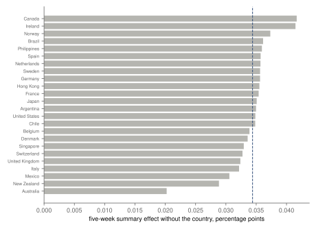

Research · pop music · concerts and streaming, 2017–2018
Did Harry Styles's streams rise where he played?
In the five weeks from a first show, his chart share in visited countries differed from not-yet-visited ones by +0.034 percentage points, too uncertain to call (inconclusive), and a check before the shows failed.
- difference, weeks 0 to +4 (registered)
- +0.034 pp 95 % CI −0.004 to 0.073 · inconclusive · visited against not-yet-visited countries
- difference in the show week (no registered label)
- +0.083 pp 95 % uniform band 0.025 to 0.142 · descriptive
- his share before the show
- 0.112 % of Top-200 streams, visited countries, weeks −12 to −2 · descriptive mean, no interval
- countries
- 50 24 with a show, 26 without · administrative count
Overwhelmed? Here's the short version
- The registered result, the average difference over weeks 0 to +4 between countries he had just played and countries not yet visited, is +0.034 percentage points with an interval that includes zero; by the rule set in advance it is inconclusive.
- The design reads such a difference as an effect only if visited and not-yet-visited countries would otherwise have moved alike. The registered check of that failed: week −10 before the shows lies outside its band, and the six weeks from −7 to −2 are all negative, so no week here is read as an effect of the show.
- In the show week alone the difference was 0.083 points (band 0.025 to 0.142); this coefficient has no registered label and is read as description. From the week after, no week's band excludes zero.
- The show-week rise came mainly from later, smaller markets such as New Zealand, Australia and Belgium, and without Australia the five-week average falls by about 41 %. Promotion around a visit, coverage reaching countries not yet visited, and the order promoters chose all remain possible explanations. Only the Top 200 is seen, for one tour.
Photo: Yvette de Wit · CC0, toned
If you have ever wondered whether a whole country's listening shifts when an artist comes to town, this study asks that of one tour. It compares countries, not people.
For most artists, concerts now earn more than recordings. The two are often treated as complements: a show sells the songs, and the songs sell the show.
Connolly and Krueger traced how musicians' income moved towards live performance1. Papies and van Heerde study, by their abstract, the interplay between recorded music and live concerts for German artists before streaming, and how it depends on piracy, unbundling and the artist's characteristics2.
Streaming makes the question sharper, because listening is now counted every day in every country. Aguiar and Waldfogel, by their abstract, used country-level streaming and sales data to ask whether streaming stimulates or depresses music sales3. Daily chart counts of this kind make it possible to look at listening within days of a concert.
A tour that reaches countries at different dates allows a comparison with the countries not yet visited. They stand in for what would have happened to the others without a show. It is not a random experiment, because the order of the tour was chosen.
Recent methods for such staggered timing45 avoid the comparisons that make a simple regression misleading. But they still rest on that stand-in being fair.
This study asks the question of Harry Styles's first solo tour, which visited 24 countries with a complete Spotify chart between September 2017 and June 2018. Did his share of a country's chart rise after he played there, relative to countries he had not yet played, and for how long?
It is related to Pop, measured, whose first part describes the same artist's charts and tours.
Data
Spotify publishes a daily Top 200 for each country, with every song's streams that day. A copy of every chart from 2017 to 2021 is on Kaggle6. From it the study takes the charts of countries from March 2017 to December 2018 and sums them by week.
In each country and week, the outcome is Harry Styles's share of the streams in the Top 200: his songs' streams divided by all the chart's streams. The share removes the size of each market and the growth of Spotify over the period.
12 of his songs appear in the window, almost all from his first album. The three most streamed are Sign of the Times, Sweet Creature, Kiwi.
The concert tables of the tour article on Wikipedia7 have 90 dated rows in 26 countries. The first is in San Francisco on 19 September 2017, and the last of a new country is in Mexico in June 2018.
The same article's lead and infobox give 89 shows, and it does not say which row the 89 leaves out. The difference does not reach the analysis, which uses only the first show in each country with a chart.
A country is treated, the method's word for visited, from the week of its first show. Of the 50 countries with a chart in every week of the window, 24 had a show and 26 did not, among them Czechia, Poland and Austria.
10 countries whose charts start or stop during the window are left out: Bulgaria, Estonia, Israel, Lithuania, Luxembourg, Nicaragua, Romania, South Africa, Thailand, Vietnam. Thailand had a show but no full chart, so it is among them. China, played once (Shanghai, 19 November 2017), has no Spotify chart and is in no comparison.
The tour came in waves. It opened in North America in September and October 2017, crossed to western Europe in late October and November, and went on to Singapore, Australia, New Zealand and Japan in November and December.
It returned to Europe in March and April 2018, playing again in several countries and for the first time in Switzerland, Belgium, Denmark, Norway, Spain and Ireland. It went back to Australia and on to the Philippines, Hong Kong and Thailand in April and May, and to Latin America in May and June. A last North American leg in June and July added no new country.
Only the first show in each country is used, and a country counts as visited from then on. Where a country was played again, the second visit came at least 18 weeks after the first. That is outside the twelve weeks after the first show that the estimates cover, so every estimate is about a first visit.
The 24 visited countries therefore fall into 16 groups by the week of their first show, most of them of one to three countries, spread over nine months. That spread is what the method needs: in almost every week of the tour some countries had been visited and others had not yet.
The raw numbers come first, and they cannot be read as an effect. In the visited countries his average share of the chart's streams was already falling before the show, as his first album aged. It went from 0.135 % twelve weeks before the show to 0.039 % two weeks before.
It jumped to 0.125 % in the show week, then fell again. Four weeks after it was 0.020 %, and at twelve weeks 0.003 %.
The fall before the show would make any simple before-and-after comparison misleading, because the share was dropping everywhere, visited or not. The design therefore compares visited countries with countries not yet visited, which were ageing out of his first album at the same time.
Raw shares, not an effect: his share was already falling before each first show, jumped in the show week and fell again.

How this was done
The design, the outcomes and the rule for reading the result were committed on 2 October 2026, before the results commit, with the code and the weekly panel committed between them. The registration row above gives the hashes and what they can and cannot show.
The estimator is Callaway and Sant'Anna's for staggered adoption4, a method for units that are treated at different times. For each group of countries first visited in the same week, it compares their change in share with the change, over the same weeks, in countries not yet visited or never visited.
These comparisons are averaged by weeks since the first show, from 12 weeks before to 12 after. Following the software's default, each estimate before the show is a one-week change, that week against the week before. Each estimate from the show week on compares that week with the week before the show.
Inference uses a multiplier bootstrap clustered by country (999 draws), a resampling method that keeps each country's weeks together. The bands are uniform: they hold for all weeks at once, which is stricter than a separate interval for each week.
The registered summary is the average difference over weeks 0 to +4, and it was labelled in advance. It is "supported" if its interval excludes zero and the band of every week from −12 to −2 includes zero. It is "not supported" if its interval includes zero and stays within ten percent of the share before the show. It is "inconclusive" otherwise.
The share before the show was 0.112 % of a country's Top-200 streams. Ten percent of it is a small number, so the rule asks a lot of the data.
The design reads these differences as effects of a show only under two assumptions. The first is parallel trends: without the show, a visited country's share would have moved like that of the countries not yet visited. The second is no anticipation: the share does not move in the weeks before a show because a show is coming.
Neither can be proven, but both leave traces in the weeks before the show. The registered check on those weeks failed (see Checks), so the differences below are reported as differences, not as effects.
A simpler regression with country and week effects would mix up the comparisons, using countries already visited as controls for those visited later. When differences change over time, as a spike that fades does, that can bias the estimate and even flip its sign8. The estimator used here avoids those comparisons.
Besides the weeks before the show, there are two more checks. A placebo moves every first show 26 weeks earlier, and the summary is re-estimated leaving out each visited country in turn.
Difference from countries not yet visited, by week
Put plainly, the five weeks after a first show leave the question open. The registered summary over weeks 0 to +4 is 0.034 points, about 31 % of the share before the show. Its 95 % CI, the range the data leave plausible, runs from −0.004 to 0.073.
That interval includes zero and is too wide to rule out a difference of ten percent. The pre-trend condition also fails. So by the rule set in advance the result is inconclusive.
The five-week window was fixed in the plan on the expectation that any rise would last a few weeks.
Week by week, the show week stands out, though the design reports no label for any single week. In the week of the first show, Harry Styles's share of the country's Top-200 streams was 0.083 percentage points higher, relative to its change in countries not yet visited.
The 95 % uniform band runs from 0.025 to 0.142. The difference is about 75 % of his share before the show.
This show-week figure is not the registered result and is read as description. With the pre-trend check failed, it cannot be attributed to the show.
In the week after, the estimate is 0.064 points (−0.017 to 0.145). It is 0.029 points in the second week and 0.004 in the third.
From the fifth week to the twelfth the estimates average −0.022 points against the week before the show, and none of their bands excludes zero. The change from the second week before the show to the week before is 0.011 points.
As a scale, not a further result: the median visited country's Top 200 held 57 million streams in the show week. So 0.083 percentage points is roughly 47 000 streams of his songs in such a country that week.
That counts only songs in the chart. The estimate is also an average over countries, each counting the same, not over streams. The largest raw jumps were in small markets (see below), so no total across countries is given.
In the show week his share was 0.083 points higher than in countries not yet visited, about 75 %; from the week after, no week is clearly above zero.

The number of his songs in the chart moves the same way. In the show week the chart held 0.29 more of his songs on an average day than the comparison implies (band 0.09 to 0.49), against 0.45 before the show. Over five weeks this outcome too is inconclusive.
Restricted to his three biggest songs, an outcome registered as exploratory, the summary is 0.034 points and inconclusive, nearly the same as the main estimate. That says little, because these three songs already made up 99.7 % of his chart share before the show.
This outcome is almost the main one under another name, and the data cannot tell whether other songs of his moved.
Where the jump was largest
The following is descriptive and was not registered. For each visited country it takes the change in his raw share from the four weeks before the show to the show week, without any comparison group.
The largest jumps, in percentage points, were in New Zealand (+0.314), Australia (+0.312), Belgium (+0.210), Singapore (+0.194): all visited after the opening legs in North America and western Europe. In New Zealand and Belgium his album was still in the chart before the show. In Australia and Singapore he had left the chart and re-entered it in the show week.
In Canada (−0.126), Sweden (−0.097), United Kingdom (−0.066), United States (−0.041), France (−0.030) the raw share fell in the show week. These were among the first countries visited, in the autumn of 2017, when his album was leaving the charts quickly from a high level, and the fall before the show went on.
In 5 countries, Spain, Brazil, Philippines, Japan, Germany, he was not in the Top 200 in those weeks at all, so any change was below what the chart shows.
These raw changes are not differences against a comparison group. Fig. 2 compares each country with others at the same time.
Checks
The registered pre-trend check, the test of whether visited and not-yet-visited countries moved alike before the shows, failed. Of the eleven weeks from −12 to −2, one has a band that excludes zero: week −10 (0.003 to 0.050 points).
Because the bands are uniform, even one week outside them is more than chance alone would usually produce. The registered rule counts it, and it is one of the two reasons the label is not "supported".
Read as one-week changes, the six weeks from −7 to −2 are all negative, from −0.003 to −0.019 points. They add up to −0.073, after weeks −12 to −8 that add up to 0.070.
No one of the six excludes zero. Together, though, they suggest a decline in the visited countries, relative to the others, in the weeks before their shows, about as large as the show-week difference.
The slightly negative estimates from the fifth week on may continue that decline rather than show a fall below where the share would have been. Re-estimating against a single base week, which would show this directly, was not registered and was not run.
Comparing with countries never visited only, rather than also with those visited later, gives a summary of 0.031 points (−0.006 to 0.069).
Leaving out each visited country in turn keeps the summary positive, between 0.020 (without Australia) and 0.042 points (without Canada). Without the United States it is 0.035, and without the United Kingdom 0.032.
Without Australia it falls by about 41 %, so one country carries a good part of it. A summary whose interval already includes zero keeping its sign is weak evidence. Leaving countries out was registered for the five-week summary only and was not run for the show-week estimate.
The placebo pretends every show happened 26 weeks earlier and gives −0.180 points (−0.423 to 0.063). Its interval includes zero, but it is too imprecise to rule out a false difference larger than the one reported. So it does not test the design, and moving early shows back also pushes them out of the window.
How large a difference could the design have caught? The interval of the five-week summary is about ±34 % of his share before the show.
An average difference over five weeks smaller than that could not be told apart from none. So the rule's ten-percent threshold for "not supported" was out of reach.
A single strong week clears that bar, but a lasting difference of a few percent would not have. With 24 visited countries and one tour, that is the limit of what these data can say.
Leaving out any one visited country keeps the five-week summary positive, from 0.020 to 0.042 points; without Australia it falls by about 41 %.

What this means
Put plainly, his share stood out in the show week against countries not yet visited, but that is description without a registered label, the pre-trend check failed, and the five-week difference is too uncertain to call.
What was measured: over the registered five weeks from a first show, Harry Styles's Spotify chart share in visited countries differed from countries not yet visited by +0.034 points (95 % CI −0.004 to 0.073), which is inconclusive.
In the show week alone the difference was about 75 % of his share, a figure without a registered label. From the week after, no week is clearly above zero.
What is not inferred: that the show caused the show-week rise. The registered check that visited and not-yet-visited countries moved alike before the shows failed.
Promotion timed with visits, coverage spilling into countries not yet visited, and the order in which promoters chose markets could each produce or hide a difference of this size.
For someone planning a tour, the decision-relevant quantity is the five-week difference and its interval, which cannot separate a small lasting gain from none. Other tours, by other artists or later in a career, would be needed to say more.
What this does not show
Only the Top 200 is published, so listening below it is invisible. In a country where he was outside the chart before and after the show, a rise that did not reach the chart counts as nothing.
Spotify is one service, and radio, video and the show itself are not measured.
Even where the assumptions held, the estimate would bundle everything that came with a visit. That means the performance, promotion around it (interviews, radio and television timed with the show), the press and social media, and fans preparing for it.
The comparison is also exposed to spillover: coverage of shows elsewhere reaches countries not yet visited, which would pull the difference towards zero.
Countries were not visited at random. Promoters chose large and nearby markets first, and the method relies on the countries visited later being a fair comparison for those visited earlier. The registered pre-trend check rejects that: one week has a band that excludes zero, and the weeks just before the shows drift down.
The tour started months after his first album, so the result is for an artist on his first record and may not hold for one with many.
His second and larger tour, Love On Tour (2021–2023), would be the natural test. But the public daily charts end in 2021, when that tour had played only in the United States.
The estimate is for a first visit only. Nothing here says anything about revenue.
Reproduction
Every number on this page is filled in from assets/concerts/results.json by a script. Download the Kaggle file to tools/data/concerts/charts.csv and check its hash. Then, from the repository root:
tools/concerts/prepare.py: the weekly panel, the shows and the songs.estimate.py: the registered estimates and checks.article.py: the figures and this page.
The design is docs/research/concert-effect-design.md.
References
- Connolly, M., Krueger, A. B. (2006). Rockonomics: the economics of popular music. In Handbook of the Economics of Art and Culture, vol. 1, 667–719. Elsevier. doi:10.1016/S1574-0676(06)01020-9. Accessed 2 October 2026.
- Papies, D., van Heerde, H. J. (2017). The dynamic interplay between recorded music and live concerts: the role of piracy, unbundling, and artist characteristics. Journal of Marketing 81(4), 67–87. doi:10.1509/jm.14.0473. Accessed 2 October 2026.
- Aguiar, L., Waldfogel, J. (2018). As streaming reaches flood stage, does it stimulate or depress music sales? International Journal of Industrial Organization 57, 278–307. doi:10.1016/j.ijindorg.2017.06.004. Accessed 2 October 2026.
- Callaway, B., Sant'Anna, P. H. C. (2021). Difference-in-differences with multiple time periods. Journal of Econometrics 225(2), 200–230. doi:10.1016/j.jeconom.2020.12.001. Software: csdid for Python. Accessed 2 October 2026.
- Roth, J., Sant'Anna, P. H. C., Bilinski, A., Poe, J. (2023). What's trending in difference-in-differences? A synthesis of the recent econometrics literature. Journal of Econometrics 235(2), 2218–2244. doi:10.1016/j.jeconom.2023.03.008. Accessed 2 October 2026.
- Dave, D. (2022). Spotify Charts: daily Top 200 and Viral 50 by region, 2017–2021. Kaggle, Open Database License. kaggle.com/datasets/dhruvildave/spotify-charts. Accessed 2 October 2026.
- Wikipedia contributors (2026). Harry Styles: Live on Tour, revision 1342196247. en.wikipedia.org. Accessed 1 October 2026.
- Goodman-Bacon, A. (2021). Difference-in-differences with variation in treatment timing. Journal of Econometrics 225(2), 254–277. doi:10.1016/j.jeconom.2021.03.014. Accessed 2 October 2026.